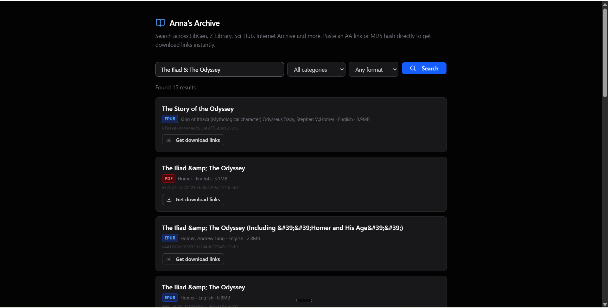
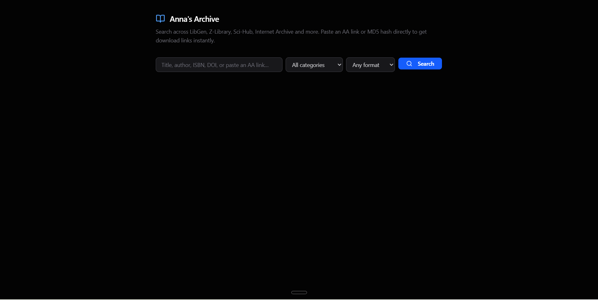

The Old Struggle
Searching for research papers or textbooks online usually means wrestling with slow mirrors and dead links. Anna's Archive is amazing, but digging through the multi-step redirect pages just to grab a quick PDF is tedious.
Many regions block the primary domains, forcing you to manually hunt down working mirrors. Public APIs are often rate-limited, broken, or require complex keys just to fetch simple metadata. The whole process feels like solving a puzzle just to read a book.
The New Way
I built Anna's Archive Download to make grabbing public domain books and papers completely friction-free. You can paste a raw archive URL or search by title, author, ISBN, or DOI directly from a single web page.

The interface bypasses regional blocks by utilizing working mirrors under the hood automatically. You get instant, direct download links from LibGen and SciDB without any of the usual clicking around.
Under the Hood
Single-File Frontend
The entire user interface lives in a single index.html file that runs entirely in your browser. No build step, no framework, no dependencies — just open the file and start searching.
MCP Server Backend
It uses a Model Context Protocol (MCP) server — a lightweight standard that lets AI assistants or web apps easily fetch external data — deployed serverlessly. This keeps the backend costs near zero while staying available globally.
HTML Scraping Fallback
Instead of relying on a broken public JSON API, the server fetches the page HTML and scrapes the exact download keys dynamically. This makes it resilient to API changes and upstream breakages.

Real-Time Link Resolution
The backend instantly resolves LibGen's temporary download sessions, which expire within minutes, so you always get a fresh link at the exact moment you click "Download".
Technology Stack Overview
| Layer | Technology | Purpose |
|---|---|---|
| Frontend | Single HTML file, vanilla JS | Runs entirely in the browser with zero build steps. |
| Backend | MCP Server, serverless functions | Scrapes pages and resolves fresh download links on demand. |
| Data Sources | LibGen, SciDB, Anna's Archive mirrors | Provides metadata and direct download links. |
| Deployment | Vercel | Hosts the frontend and serverless API functions. |
What Broke
Building against a live, third-party site means things will break. Here's what hit me and how I fixed it.
The Selector Shift
Anna's Archive updated their site layout, changing their metadata container class from mt-2 to mt-4, which broke my initial parser entirely. I had to update the CSS selectors and add fallback matching to handle future layout changes gracefully.
Region Blocking Headaches
The .org mirror was completely blocked for some of my early testers, so I had to hardcode a fallback to the .gl mirror to keep it functional. Region resilience became a first-class concern in the scraper logic.
Expired Download Sessions
LibGen links expire incredibly fast, which meant cached links failed. I solved this by resolving the link only at the exact second the user clicks "Download" — no caching, no stale sessions.
"The trickiest part wasn't building the scraper — it was keeping it alive against a site that changes constantly."
Give It a Spin
The project is fully open source and ready to use. Get started with the links below:
- Live Demo: Open the Live Web Tool
- Source Code: View the Codeberg Repository
Quick Start
You can open the index.html file locally in any web browser to start searching immediately. No server setup required for the frontend.
Self-Hosting
Grab the code, fork the project, add new scraping mirrors, or suggest features on Codeberg. The MCP server can be deployed to any serverless platform.
A Quick Disclaimer
Just an index: This tool does not host, store, or distribute any digital files or copyrighted material. It acts purely as a search gateway and indexing tool to help find public links. You are entirely responsible for the files you choose to search for and download, and for making sure your downloads comply with your local laws.